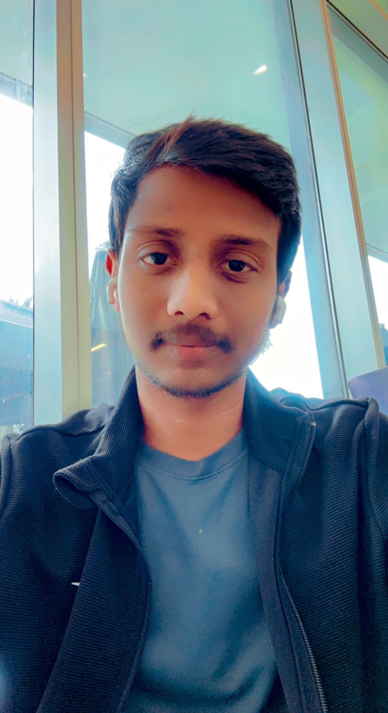
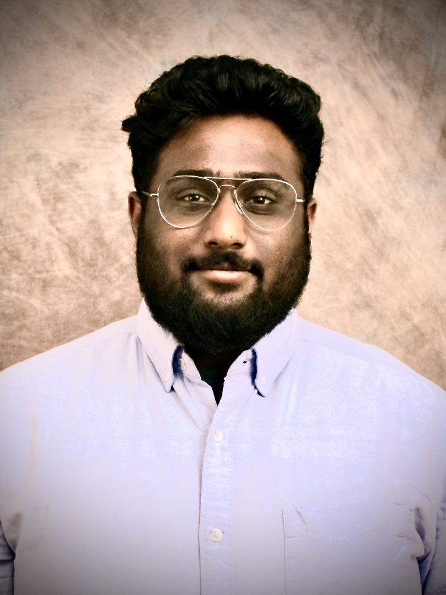

Greetings from BullTrack. Use, This is an application to manage all of your job applications and job events tracking, exclusively three month free for USF Bulls and $5/ month after that, and "$10/ month" for others. If you want to keep track of all of your favorite job applications in one spot, use this application.
| Team Member | Contribution |
|---|---|
|

Anudeep K A.K.A :"The Thor" anudeepk@usf.edu |
Anudeep is a Graduate student from USF, he was able to provide useful insights of how to test and find the errors. He helped the team whenever they were stuck with errors and roadblocks in programming. His contribution was the offers page. |
|
Lokesh Anjaneya Pothana A.K.A :"The Bat Man" lokeshanjaneya@usf.edu |
Lokesh is a Graduate student from USF, he is the main programmer of this html page. With his past experience as a webpage developer, he was able to provide useful insights of how to go about programming of HTML.His contribution was the about Events page,InProcess page and final CSS and Design. |
|

Rajashekar Reddy Patlori A.K.A :"The Iron Man" patlori@usf.edu |
Rajashekar is a Graduate student from USF, he was the one who kept the group moving forward. He was the one who encouraged the team to complete tasks on schedule and convened meetings to make sure the group was moving in the right path. His contribution was made to the creation of the Home and About Us pages. |

Shishira V Kasala A.K.A :"The WonderWomen" shishira@usf.edu |
Shishira is a Graduate student from USF, The main idea of this project was designed by her. She did the initial research of what should be the theme of this webpage and where should we extract the data, and went ahead and shared her thoughts and design with the team. The idea was immediately picked up by the team. Her contribution was the Wishlist page of this website. |